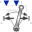

ForceAndTorqueDemonstrate usage of ForceAndTorque element |
|
Diagram
{kind=link}
Information
This information is part of the Modelica Standard Library maintained by the Modelica Association.
In this example the usage of the general force element "ForceAndTorque" is shown. A "ForceAndTorque" element is connected between a body and a fixed point in the world system. The force and torque is defined by the "Constant" block. The two vectors are resolved in the coordinate system defined by the "fixedRotation" component that is fixed in the world system:
The animation view at time = 0 is shown in the figure below. The yellow line is directed from frame_a to frame_b of the forceAndTorque component. The green arrow characterizes the force acting at the body whereas the green double arrow characterizes the torque acting at the body. The lengths of the two vectors are proportional to the lengths of the force and torque vectors (constant scaling factors are defined as parameters in the forceAndTorque component):

Components (10)
| world |
Type: World |
|
|---|---|---|
| body |
Type: BodyCylinder |
|
| fixed1 |
Type: Fixed |
|
| fixedRotation |
Type: FixedRotation |
|
|  | forceAndTorque |
Type: ForceAndTorque |
| revolute2 |
Type: Revolute |
|
| torque |
Type: Constant[3] |
|
| revolute1 |
Type: Revolute |
|
| fixed2 |
Type: Fixed |
|
| force |
Type: Constant[3] |